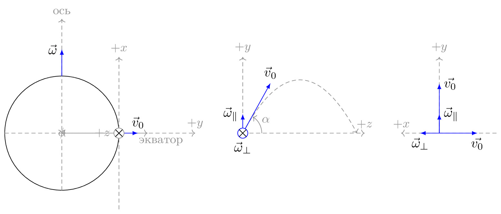

pre.tex
\documentclass[tikz]{standalone}\input{pre.tex}\begin{document}\begin{tikzpicture}
\matrix[column sep=0.3cm] {
\begin{scope}[]
\xdef\r{1.5cm}
\xdef\rp{3pt}
\node [shape=circle,draw] (c) at (0,0) [minimum size=\r*2] {};
\draw [axis, ->] (0,0) -- (\iangle:\r+2cm) node[anchor=south] {$+y$};
\draw [axis, ->] ($(\iangle:\r)!2cm!90:(0,0)$) --($(\iangle:\r)!2cm!270:(0,0)$) node[anchor=south] {$+x$};
\draw [axis, ->] (0,-\r) -- (0,2*\r) node[anchor=south] {ось};
\draw [axis, ->] (-\r,0) -- (1.5*\r,0) node[below, xshift=1em] {экватор};
\draw [force, ->] (0,\r) -- (0,\r+2em) node[left] {$\vec{\omega}$};
\coordinate (o) at (\iangle:\r);
\draw[force,->] (o) -- ++(\iangle:0.5cm) node[above] {$\vec{v}_0$};
{[axis,<-]
\draw[solid,shorten >=0.5pt] (\iangle:\arcr) arc(\iangle:0:\arcr);
\node at (0.5*\iangle:1.4*\arcr) {$\phi$};
\draw[solid] (0,0) -- (\iangle:\r) node[left,xshift=-3pt]{$+z$};
\draw[solid, fill=white] (\iangle:\r) circle (\rp+0.8pt) node[cross=\rp,rotate=0]{};
}
\end{scope}
&
\begin{scope}[rotate=0]
{[axis,->]
\draw (0,0) coordinate (0) -- (0,2) node[anchor=south] {$+y$};
\draw (0,0) -- ++(3.2,0) node[above] {$+z$};
\draw[scale=0.5,domain=-2:2,smooth,variable=\x] plot ({1.5*\x+3},{-0.7*\x*\x+2.8});
\draw[solid,shorten >=0.5pt, ] (0:0.5)
arc(0:61:0.5);
\node at (30:0.7) {$\alpha$};
}
{[force,->]
\draw (0,0) -- ++(61:1.5) node[above] {$\vec{v}_0$};
\draw (0,0) --(90:0.5) node [above, left] {$\vec{\omega}_\parallel$};
\draw[solid, fill=white] (0,0) node[below,yshift=-3pt]{$\vec{\omega}_\perp$} circle (\rp+0.8pt) node[cross=\rp,rotate=0]{};
}
\end{scope}
&
\begin{scope}[]
{[axis,->]
\draw (0,0) -- (0,2) node[anchor=south] {$+y$};
\draw (1.5,0) -- ++(-2.5,0) node[above] {$+x$};
}
{[force,->]
\draw (0,0) --(90:1.3) node [above, right] {$\vec{v_0}$};
\draw (0,0) --(90:0.5) node [above, right] {$\vec{\omega}_\parallel$};
\draw (0,0) --(0:1) node [below] {$\vec{v_0}$};
\draw (0,0) --(180:0.5) node [below] {$\vec{\omega}_\perp$};
}
\end{scope}
\\
};
\end{tikzpicture}\end{document}